Distribuição Normal
Introdução
A distribuição normal é um dos modelos probabilísticos mais importantes, seja do ponto de vista prático ou teórico. Esse modelo de probabilidade possui um papel central na teoria de probabilidade e estatística inferencial uma vez que representa o limite de qualquer distrbuição amostral da média como mostra o teorema central do limite. Isto significa que a média das variáveis aleatórias independentes de uma amostra aleatória se aproxima da distribuição normal conforme o tamanho da amostra \({\displaystyle n}\) cresce.
Um dos primeiros estudos relacionados com esse modelo de probabilidade foi em 1756 no trabalho The Doctrine of Chances puplicado por Abraham de Moivre, que observou a distribuição normal como o limite de uma distribuição binomial, o que originou um caso particular do teorema central do limite. Em seguida, Pierre-Simon Laplace obteve uma boa aproximação do erro entre as distribuições normal e binomial utilizando a função gama de Euler. Porém, somente em 1809, o matemático alemão Carl Friedrich Gauss observou que erros experimentais em medidas físicas, nesse caso na astronomia, poderia estar associado com à curva (normal) da função densidade da distribuição normal.
Por fim, no século XIX, Henri Poincaré denotou esse modelo probabilístico como distribuição normal. Porém, a distribuição normal também é conhecida como distribuição de Laplace-Gauss ou distribuição Gaussiana.
Distribuição Normal
Diz-se que uma variável aleatória \(X\) segue distribuição normal (ou Gaussiana) se sua função densidade é dada por
\[ f(x) = \frac{1}{\sigma\sqrt{2\pi}} \exp\left[-\frac{1}{2} \left( \frac{x - \mu}{\sigma}\right)^2\right], \quad -\infty < x < \infty \] em que \(\mu \in \mathbb{R}\) é o parâmetro de locação e \(\sigma > 0\) é o parâmetro de escala.
Esperança e Variância: \(\displaystyle \mbox{E}(X) = \mu \quad \mbox{e} \quad \mbox{Var}(X) = \sigma^2\)
Notação: \(X \sim \text{N}(\mu, \sigma^2)\).
Graficamente, temos
par(mfrow=c(2,2), mar=c(3,4,2,1), mgp=c(2,0.5,0), las=1)
plot(seq(10, 90, length=100), type = "l", xlab = "X", ylab = "f(x)",
y = dnorm(x = seq(10, 90, length=100), mean = 50, sd = 5),
main = expression(list(mu == 50, sigma^2 == 25)))
plot(seq(10, 90, length=100), type = "l", xlab = "X", ylab = "f(x)",
y = dnorm(x = seq(10, 90, length=100), mean = 50, sd = 10),
main = expression(list(mu == 50, sigma^2 == 100)))
plot(seq(70, 130, length=100), type = "l", xlab = "X", ylab = "f(x)",
y = dnorm(x = seq(70, 130, length=100), mean = 100, sd = 5),
main = expression(list(mu == 100, sigma^2 == 25)))
plot(seq(170, 230, length=100), type = "l", xlab = "X", ylab = "f(x)",
y = dnorm(x = seq(170, 230, length=100), mean = 200, sd = 5),
main = expression(list(mu == 200, sigma^2 == 25)))
par(mfrow=c(1,1))Propriedades da Curva Normal
- É simétrica em relação à \(\mu\)
- O ponto de máximo (moda) de \(f(x)\) é \(x=\mu\)
- Os pontos de inflexão da função densidade são \(\mu-\sigma\) e \(\mu+\sigma\)
- A curva é assintótica em relação ao eixo \(x\)
Para qualquer variável aleatória \(X\) que segue distribuição normal, valem as seguintes relações
\[\begin{align*} &P[X > \mu] = P[X < \mu] \\\\ &P[\mu - \sigma < X < \mu + \sigma] \approxeq 0,683 \\\\ &P[\mu - 2\sigma < X < \mu + 2\sigma] \approxeq 0,954 \\\\ &P[\mu - 3\sigma < X < \mu + 3\sigma] \approxeq 0,997 \end{align*}\]
curve(dnorm, from = -4, to = 4, axes = FALSE,
xlab = "x", ylab = "f(x)", yaxs = "i",
ylim = c(0, 0.5))
axis(1, at = c(-3, -2, -1, 0, 1, 2, 3),
labels = c(expression(mu - 3 %.% sigma),
expression(mu - 2 %.% sigma), expression(mu - sigma),
expression(mu),
expression(mu + sigma), expression(mu + 2 %.% sigma),
expression(mu + 3 %.% sigma)))
cord.x <- c(-3, seq(-3, 3, 0.01), 3)
cord.y <- c(0, dnorm(seq(-3, 3, 0.01)), 0)
polygon(x = cord.x, y = cord.y, col = "orange", border = NA)
segments(x0 = 0, y0 = 0, x1 = 0, y1 = dnorm(0))
segments(x0 = 1, y0 = 0, x1 = 1, y1 = dnorm(1), lty = 2)
segments(x0 = 2, y0 = 0, x1 = 2, y1 = dnorm(2), lty = 2)
segments(x0 = 3, y0 = 0, x1 = 3, y1 = dnorm(3), lty = 2)
segments(x0 = -1, y0 = 0, x1 = -1, y1 = dnorm(-1), lty = 2)
segments(x0 = -2, y0 = 0, x1 = -2, y1 = dnorm(-2), lty = 2)
segments(x0 = -3, y0 = 0, x1 = -3, y1 = dnorm(-3), lty = 2)
text(x = 0.5, y = 0.15, labels = round(pnorm(1) - pnorm(0), 2))
text(x = -0.5, y = 0.15, labels = round(pnorm(0) - pnorm(-1), 2))
text(x = 1.5, y = 0.05, labels = round(pnorm(2) - pnorm(1), 2))
text(x = -1.5, y = 0.05, labels = round(pnorm(-1) - pnorm(-2), 2))
text(x = 1.5, y = 0.05, labels = round(pnorm(2) - pnorm(1), 2))
text(x = -1.5, y = 0.05, labels = round(pnorm(-1) - pnorm(-2), 2))
text(x = 2.35, y = 0.01, labels = round(pnorm(3) - pnorm(2), 2))
text(x = -2.35, y = 0.01, labels = round(pnorm(-2) - pnorm(-3), 2))
segments(x0 = -1, y0 = 0.41, x1 = 1, y1 = 0.41)
text(x = 0, y = 0.41,
labels = paste0(round((pnorm(1) - pnorm(-1))*100, 1), "%"),
pos = 3, offset = 0.1)
segments(x0 = -2, y0 = 0.44, x1 = 2, y1 = 0.44)
text(x = 0, y = 0.44,
labels = paste0(round((pnorm(2) - pnorm(-2))*100, 1), "%"),
pos = 3, offset = 0.1)
segments(x0 = -3, y0 = 0.47, x1 = 3, y1 = 0.47)
text(x = 0, y = 0.47,
labels = paste0(round((pnorm(3) - pnorm(-3))*100, 1), "%"),
pos = 3, offset = 0.1)
box()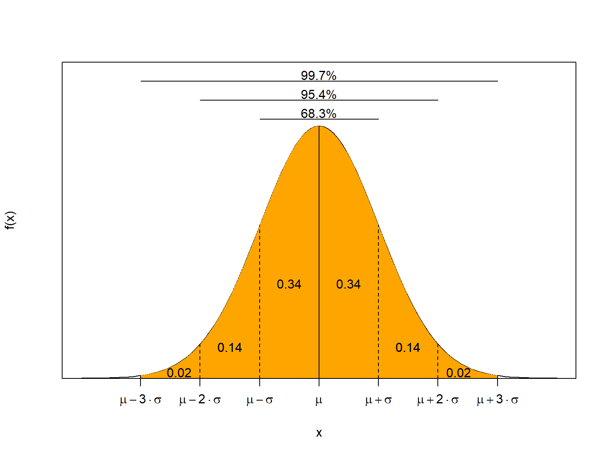
Exemplo 1:
Seja \(X \sim \mbox{N}(10,4)\). Calcule
- \(P(8 < X < 12)\)
- \(P(6 < X < 14)\)
- \(P(4 < X < 16)\)
Solução:
Como \(\mu = 10\) e \(\sigma = 2\), então utilizando a propriedade da curva normal acima, encontra-se que
- \(P(8 < X < 12) = P(\mu - \sigma < X < \mu + \sigma) = 0.6827\)
Graficamente, temos
x = seq(0,20, by =0.01)
media = 10
var = 4
# função de densidade
dx = dnorm(x, mean = media, sd = sqrt(var))
#plot da função de densidade
plot(x,dx,type = "l", col = "blue", ylab = bquote(f[X]~(x)~~"densidades"), xlab = "x", main = bquote("N"~(mu==.(media)~","~sigma^2 == .(var))))
# poligono para representar a área sob a curva
a = 8 # Limite inferior
b = 12 # Limite superior
da = dnorm(a,mean = media, sd = sqrt(var)) # Densidade no Limite inferior crítico
db = dnorm(b,mean = media, sd = sqrt(var)) # Densidade no Limite superior crítico
polygon(x = c(a, a , x[a<x & x<b], b), # X = conjunto dos valores de a até b
y = c(0, da , dx[a<x & x<b], 0), # Y = conjunto das Density de a até b
col = "red",
density = c(20),
angle = c(-45))
# Legendas
prob = pnorm(b,mean = media, sd = sqrt(var)) - pnorm(a,mean = media, sd = sqrt(var))
legenda <- list( bquote( "Probabilidade =" ~ .(round(prob,4)) ) )
mtext(side = 3, do.call(expression, legenda), line=-2:-2, adj=1, col=c("red"))
# adicionado valores no eixo x
m = Map(axis, side=1, at = round(c(a,b),2),
col.axis = c("red" , "red"),
col.ticks = c("red", "red"),
lwd=0, las=1,
lwd.ticks = 2)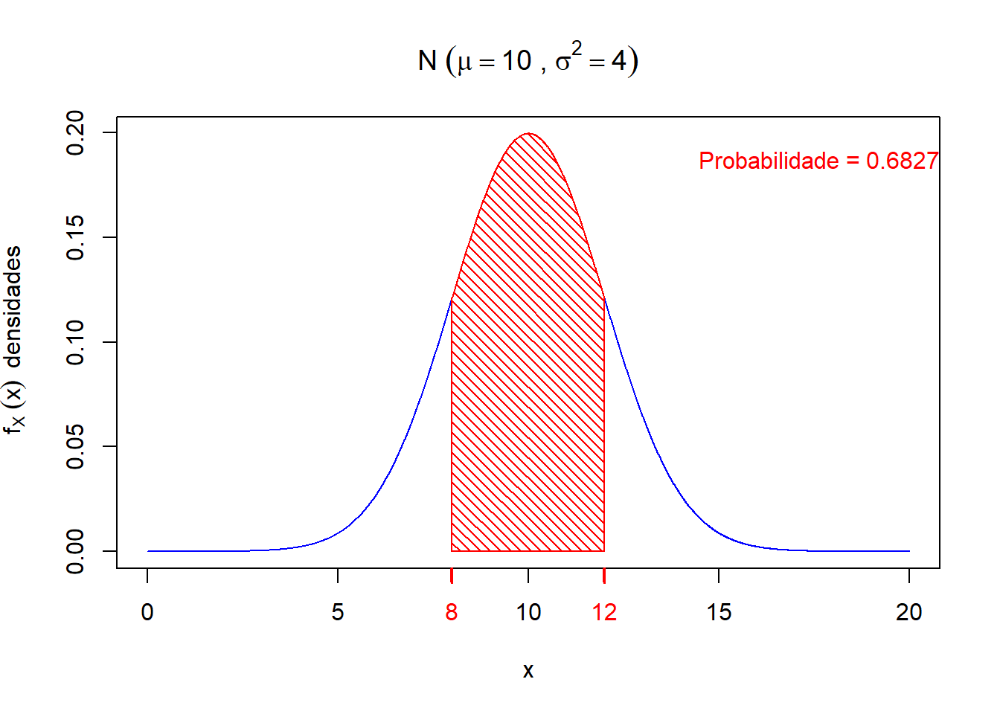
- \(P(6 < X < 14) = P(\mu - 2\sigma < X < \mu + 2\sigma) = 0.9545\)
Graficamente, temos
x = seq(0,20, by =0.01)
media = 10
var = 4
# função de densidade
dx = dnorm(x, mean = media, sd = sqrt(var))
#plot da função de densidade
plot(x,dx,type = "l", col = "blue", ylab = bquote(f[X]~(x)~~"densidades"), xlab = "x", main = bquote("N"~(mu==.(media)~","~sigma^2 == .(var))))
# poligono para representar a área sob a curva
a = 6 # Limite inferior
b = 14 # Limite superior
da = dnorm(a,mean = media, sd = sqrt(var)) # Densidade no Limite inferior crítico
db = dnorm(b,mean = media, sd = sqrt(var)) # Densidade no Limite superior crítico
polygon(x = c(a, a , x[a<x & x<b], b), # X = conjunto dos valores de a até b
y = c(0, da , dx[a<x & x<b], 0), # Y = conjunto das Density de a até b
col = "red",
density = c(20),
angle = c(-45))
# Legendas
prob = pnorm(b,mean = media, sd = sqrt(var)) - pnorm(a,mean = media, sd = sqrt(var))
legenda <- list( bquote( "Probabilidade =" ~ .(round(prob,4)) ) )
mtext(side = 3, do.call(expression, legenda), line=-2:-2, adj=1, col=c("red"))
# adicionado valores no eixo x
m = Map(axis, side=1, at = round(c(a,b),2),
col.axis = c("red" , "red"),
col.ticks = c("red", "red"),
lwd=0, las=1,
lwd.ticks = 2)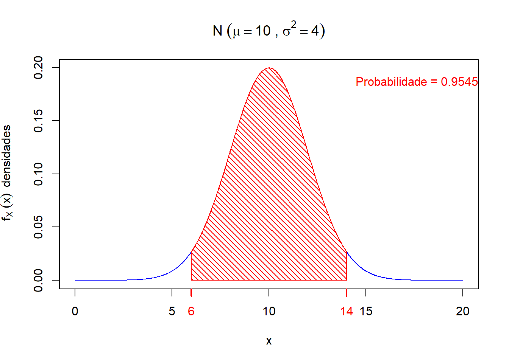
- \(P(4 < X < 16) = P(\mu - 3\sigma < X < \mu + 3\sigma) = 0.9973\)
Graficamente, temos
x = seq(0,20, by =0.01)
media = 10
var = 4
# função de densidade
dx = dnorm(x, mean = media, sd = sqrt(var))
#plot da função de densidade
plot(x,dx,type = "l", col = "blue", ylab = bquote(f[X]~(x)~~"densidades"), xlab = "x", main = bquote("N"~(mu==.(media)~","~sigma^2 == .(var))))
# poligono para representar a área sob a curva
a = 4 # Limite inferior
b = 16 # Limite superior
da = dnorm(a,mean = media, sd = sqrt(var)) # Densidade no Limite inferior crítico
db = dnorm(b,mean = media, sd = sqrt(var)) # Densidade no Limite superior crítico
polygon(x = c(a, a , x[a<x & x<b], b), # X = conjunto dos valores de a até b
y = c(0, da , dx[a<x & x<b], 0), # Y = conjunto das Density de a até b
col = "red",
density = c(20),
angle = c(-45))
# Legendas
prob = pnorm(b,mean = media, sd = sqrt(var)) - pnorm(a,mean = media, sd = sqrt(var))
legenda <- list( bquote( "Probabilidade =" ~ .(round(prob,4)) ) )
mtext(side = 3, do.call(expression, legenda), line=-2:-2, adj=1, col=c("red"))
# adicionado valores no eixo x
m = Map(axis, side=1, at = round(c(a,b),2),
col.axis = c("red" , "red"),
col.ticks = c("red", "red"),
lwd=0, las=1,
lwd.ticks = 2)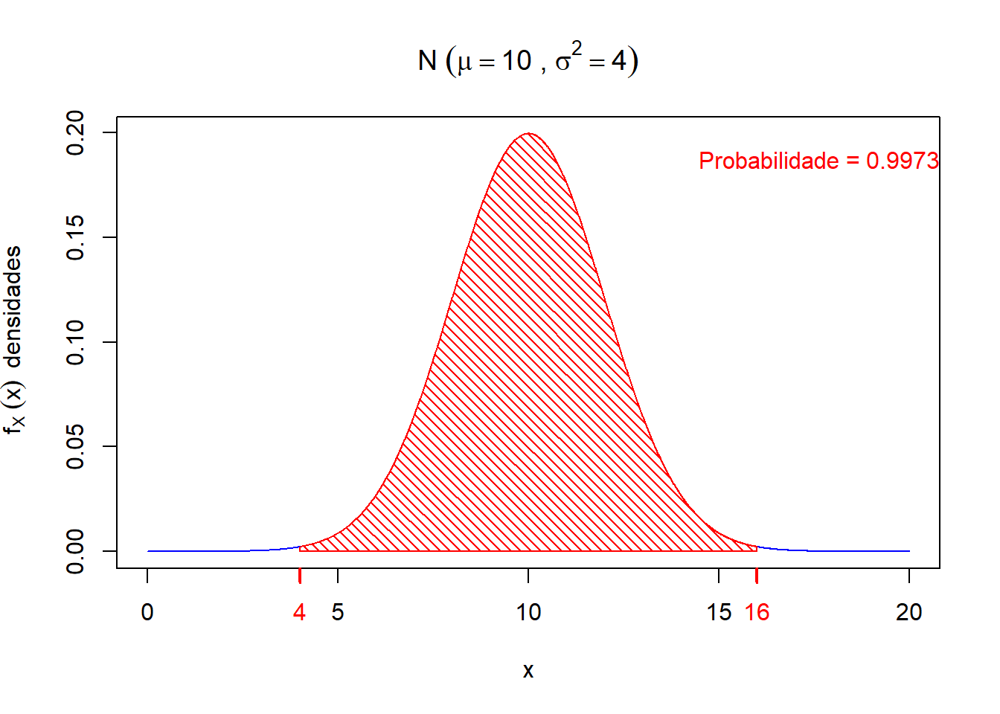
Como calcular probabilidades no modelo normal?
Exemplo 2:
Um bom indicador do nível de intoxicação por benzeno é a quantidade de fenol encontrada na urina. A quantidade de fenol na urina de moradores de certa região segue, aproximadamente, uma distribuição normal com média \(6\) mg/l e desvio-padrão \(2\) mg/l. Uma pessoa é considerada “atípica” se a quantidade de fenol em sua urina for superior a \(9\) mg/l ou inferior a \(3\) mg/l.
Questão:
Qual é a probabilidade de ser encontrado um indivíduo “atípico”?
Solução:
Seja \(X\) uma variável aleatória que representa quantidade de fenol encontrada na urina de um indivíduo de uma certa região.
Observa-se que \[ X \sim N(6,4) \implies \begin{cases} \mu = 6 \ \mbox{mg/l} \\\\ \sigma = 2 \ \mbox{mg/l} \end{cases} \] Além disso, temos que
\[ \text{Indivíduo atípico} \implies \text{Indivíduo} \quad X < 3 \quad \text{ou} \quad X > 9 \]
Então,
\[ P(\text{Indivíduo atípico}) = P(X < 3 \quad \text{ou} \quad X > 9) = P(X < 3) + P(X > 9) \]
Assim, temos que calcular as duas probabilidades acima para solucionar o problema.
\[ P(X > 9) \ = \ \int_{9}^{+\infty}\frac{1}{2\sqrt{2\pi}} \ \exp\left[-\frac{1}{2}\left(\frac{x -6}{2}\right)^2\right] dx \ = \ ? \]
Observa-se que a integral acima não possui solução exata, pois a função densidade da distribuição normal não admite uma função primitiva, isto ém não existe uma função \(F\) tal que \(\displaystyle F^{\prime}(x) = f(x)\).
Dessa forma, como calcular esta probabilidade, considerando que a variável de interesse é representada pela distribuição normal?
Seja \(X \sim \mbox{N}(\mu,\sigma^2)\) e desejamos calcular a probabilidade da variável aleatória \(X\) pertencer a um intervalo \((a,b) \subset \mathbb{R}\).
Então,
\[ P[a < X < b] = \int_{a}^{b} f(x) \ dx= \int_{a}^{b}\frac{1}{\sigma\sqrt{2\pi}} \ \exp\left[-\frac{1}{2}\left(\frac{x -\mu}{\sigma}\right)^2\right] dx \]
Observa-se que uma possível solução para integral acima é por meio da utilização de métodos númericos.
Uma forma alternativa para calcular \(P[a < X < b]\) quando \(X \sim N(\mu,\sigma^{2})\) é utilizar uma simples transformação. Então,
\[ \begin{eqnarray*} Z = \frac{X - \mu}{\sigma}\quad\mbox{então}\quad Z \sim N(0,1) \end{eqnarray*} \] em que, \(Z\) segue distribuição normal com média \(\mu = 0\) e variância \(\sigma^2 = 1\). A variável aleatória \(Z\) também é conhecida como distribuição normal padrão ou normal reduzida.
Observação 1:
Observa-se que a grande vantagem de realizar essa transformação, é poder construir uma única tabela com as probabilidades aproximadas de \(Z\), ao invés de uma tabela para cada par \((\mu,\sigma^2)\).
Assim, se \(Z \sim N(0,1)\), então sua função densidade é dada por
\[ \begin{eqnarray*} f(z)=\frac{1}{\sqrt{2\pi}}\,\,\exp\left[-\frac{z^{2}}{2}\right], \quad -\infty < z < \infty \end{eqnarray*} \] Para se obter a probabilidade de \(X\) estar entre \(a\) e \(b\), temos que
\[ \begin{eqnarray*} P[a < X < b] \ &=& \ P\left[\frac{a-\mu}{\sigma} < \frac{X-\mu}{\sigma} < \frac{b-\mu}{\sigma}\right] \\\\&=& P\left[\frac{a-\mu}{\sigma} < Z < \frac{b-\mu}{\sigma}\right] \\\\ \ &=& \ P\left[z_{1} < Z < z_{2}\right] \\\\ \ &=& \ \int_{z_{1}}^{ z_{2}} \frac{1}{\sqrt{2\pi}}\,\,\exp\left[-\frac{z^{2}}{2}\right] \ dz. \end{eqnarray*} \]
Observação 2:
Observa-se que realizando a transformação \(Z\), a probabilidade não foi alterada! Por exemplo, se \(X \sim \mbox{N}(100,10)\) então realizando a transformação em \(Z\), temos que \(Z \sim \mbox{N}(0,1)\). Graficamente, pode-se observar que
par(mfrow=c(1,2))
media = 100 # média
var = 10 # variância
li = media - 4.5*sqrt(var)
ls = media + 4.5*sqrt(var)
x = seq(li,ls, by =0.01) # limites de x e plot
# função de densidade
dx = dnorm(x, mean = media, sd = sqrt(var))
#plot da função de densidade
plot(x,dx,type = "l", col = "blue", ylab = bquote(f[X]~(x)~~"densidades"), xlab = "x", main = bquote("X~ N"~(mu==.(media)~","~sigma^2 == .(var))))
# transformando em Z
z = (x-media)/sqrt(var)
dz = dnorm(z, mean = 0, sd = 1)
plot(z,dz,type = "l", col = "red", ylab = bquote(f[Z]~(z)~~"densidades"), xlab = "z", main = bquote("Z~ N"~(mu==0~","~sigma^2 == 1)))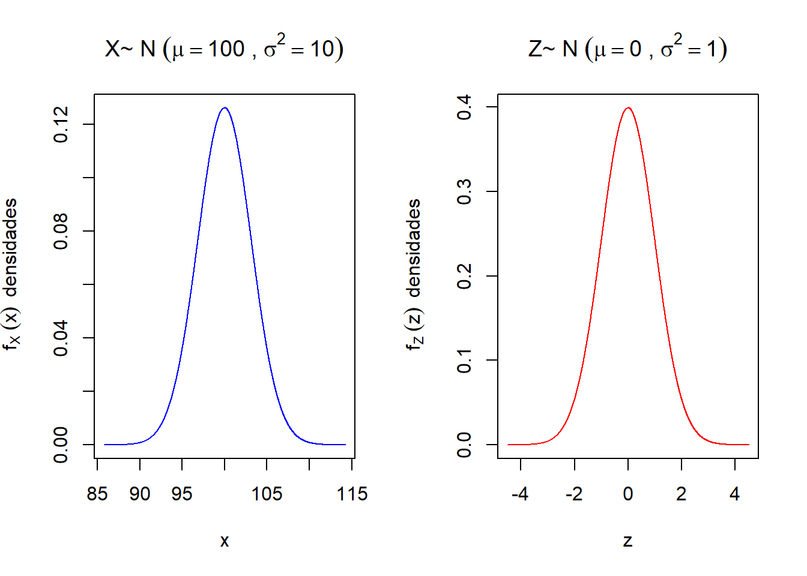
A partir disso, podemos construir uma tabela chamada de Tabela da distribuição normal padrão. Assim uma vez que a variável aleatória \(X\) é padronizada em \(Z\), pode-se calcular a probabilidade (área) para qualquer valor de \(X\) entre dois pontos sob a curva normal diretamente com o uso de uma tabela da distribuição normal padrão.
Pergunta: Como utilizar essa tabela? Qual é o significado dos valores tabelados?
Como
\[ P[a < X < b] \ = \ P\left[\frac{a-\mu}{\sigma} < \frac{X-\mu}{\sigma} < \frac{b-\mu}{\sigma}\right] \ = \ P[z_{1} < Z < z_{2}], \] então calcule \(P[z_{1} < Z < z_{2}]\) para \(z_1 = 0\) e \(z_2 = 0,32\).
Assim, utilizando a tabela da distribuição normal padrão, temos
\[ P[z_{1} < Z < z_{2}] = P[0 < Z < 0,32] = 0.1255, \quad \text{em que} \quad z_{2}\ \ = \underbrace{0}_{\text{Coluna da Tabela}}, \overbrace{32}_{\text{Linha da Tabela}} \]
Graficamente, temos
x = seq(-3,3, by =0.01)
media = 0
var = 1
# função de densidade
dx = dnorm(x, mean = media, sd = sqrt(var))
#plot da função de densidade
plot(x,dx,type = "l", col = "blue", ylab = bquote(f[Z]~(z)~~"densidades"), xlab = "z", main = bquote("N"~(mu==.(media)~","~sigma^2 == .(var))))
# poligono para representar a área sob a curva
a = 0# Limite inferior
b = 0.32 # Limite superior
da = dnorm(a,mean = media, sd = sqrt(var)) # Densidade no Limite inferior crítico
db = dnorm(b,mean = media, sd = sqrt(var)) # Densidade no Limite superior crítico
polygon(x = c(a, a , x[a<x & x<b], b), # X = conjunto dos valores de a até b
y = c(0, da , dx[a<x & x<b], 0), # Y = conjunto das Density de a até b
col = "red",
density = c(20),
angle = c(-45))
# Legendas
prob = pnorm(b,mean = media, sd = sqrt(var)) - pnorm(a,mean = media, sd = sqrt(var))
legenda <- list( bquote( "Probabilidade =" ~ .(round(prob,4)) ) )
mtext(side = 3, do.call(expression, legenda), line=-2:-2, adj=1, col=c("red"))
# adicionado valores no eixo x
m = Map(axis, side=1, at = round(c(a,b),2),
col.axis = c("red" , "red"),
col.ticks = c("red", "red"),
lwd=0, las=1,
lwd.ticks = 2)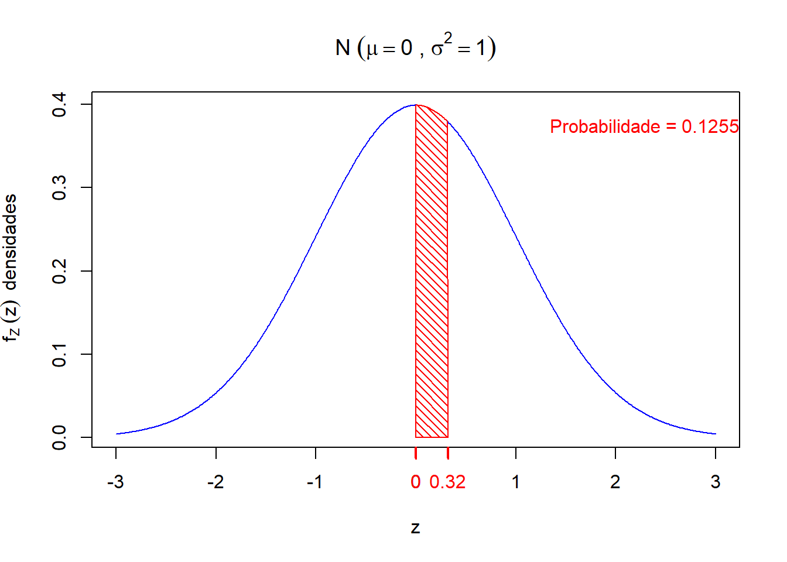
Calcule as seguintes probabilidades \(P(Z < -2,33)\) e \(P(Z > 2,33)\).
Retornando ao EXemplo 2, sobre a quantidade de fenol, temos que
\[ P(X > 9) \ = \ P\left(\frac{X -\mu}{\sigma} > \frac{9 -\mu}{\sigma}\right) \ = \ P\left(Z > \frac{9 -\mu}{\sigma}\right) \ = \ P\left(Z > \frac{9 -6}{2}\right) = P(Z > 1,5) \]
Esboçando o gráfico de \(Z\), temos que
x = seq(-4,4, by =0.01)
media = 0
var = 1
# função de densidade
dx = dnorm(x, mean = media, sd = sqrt(var))
#plot da função de densidade
plot(x,dx,type = "l", col = "blue", ylab = bquote(f[Z]~(z)~~"densidades"), xlab = "z", main = bquote("N"~(mu==.(media)~","~sigma^2 == .(var))))
# poligono para representar a área sob a curva
a = 1.5# Limite inferior
b = 4 # Limite superior
da = dnorm(a,mean = media, sd = sqrt(var)) # Densidade no Limite inferior crítico
db = dnorm(b,mean = media, sd = sqrt(var)) # Densidade no Limite superior crítico
polygon(x = c(a, a , x[a<x & x<b], b), # X = conjunto dos valores de a até b
y = c(0, da , dx[a<x & x<b], 0), # Y = conjunto das Density de a até b
col = "red",
density = c(20),
angle = c(-45))
# Legendas
prob = pnorm(b,mean = media, sd = sqrt(var)) - pnorm(a,mean = media, sd = sqrt(var))
legenda <- list( bquote( "Probabilidade =" ~ .(round(prob,4)) ) )
mtext(side = 3, do.call(expression, legenda), line=-2:-2, adj=1, col=c("red"))
# adicionado valores no eixo x
m = Map(axis, side=1, at = round(c(a,b),2),
col.axis = c("red" , "red"),
col.ticks = c("red", "red"),
lwd=0, las=1,
lwd.ticks = 2)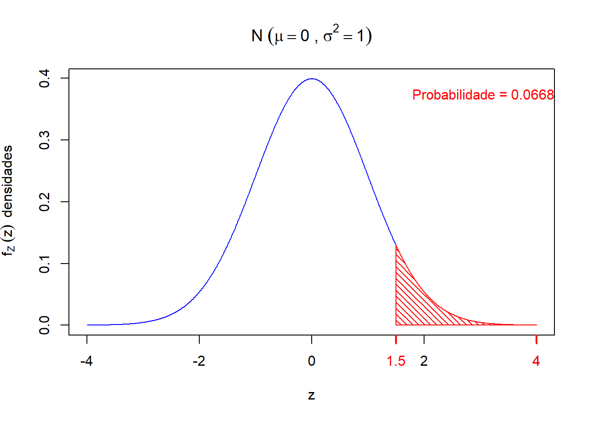
Observa-se que
\[ P(Z > 1,5) \ = \ 0,5 - P(0 < Z < 1.5) \ =\ 0,5 \ \ - \underbrace{0,4332}_{\text{Valor da Tabela}} \ = \ \ 0.0668 \]
Para determinar a probabilidade de um indivíduo atípico numa certa região, vamos calcular a probabilidade \(P(X < 3)\), isto é
\[ P(X < 3) \ = \ P\left(\frac{X -\mu}{\sigma} < \frac{3 -\mu}{\sigma}\right) \ = \ P\left(Z < \frac{3 -\mu}{\sigma}\right) \ = \ P(Z < - 1,5) \] Esboçando o gráfico de \(Z\) neste caso, temos
x = seq(-4,4, by =0.01)
media = 0
var = 1
# função de densidade
dx = dnorm(x, mean = media, sd = sqrt(var))
#plot da função de densidade
plot(x,dx,type = "l", col = "blue", ylab = bquote(f[Z]~(z)~~"densidades"), xlab = "z", main = bquote("N"~(mu==.(media)~","~sigma^2 == .(var))))
# poligono para representar a área sob a curva
a = -4# Limite inferior
b = - 1.5 # Limite superior
da = dnorm(a,mean = media, sd = sqrt(var)) # Densidade no Limite inferior crítico
db = dnorm(b,mean = media, sd = sqrt(var)) # Densidade no Limite superior crítico
polygon(x = c(a, a , x[a<x & x<b], b), # X = conjunto dos valores de a até b
y = c(0, da , dx[a<x & x<b], 0), # Y = conjunto das Density de a até b
col = "red",
density = c(20),
angle = c(-45))
# Legendas
prob = pnorm(b,mean = media, sd = sqrt(var)) - pnorm(a,mean = media, sd = sqrt(var))
legenda <- list( bquote( "Probabilidade =" ~ .(round(prob,4)) ) )
mtext(side = 3, do.call(expression, legenda), line=-2:-2, adj=1, col=c("red"))
# adicionado valores no eixo x
m = Map(axis, side=1, at = round(c(a,b),2),
col.axis = c("red" , "red"),
col.ticks = c("red", "red"),
lwd=0, las=1,
lwd.ticks = 2)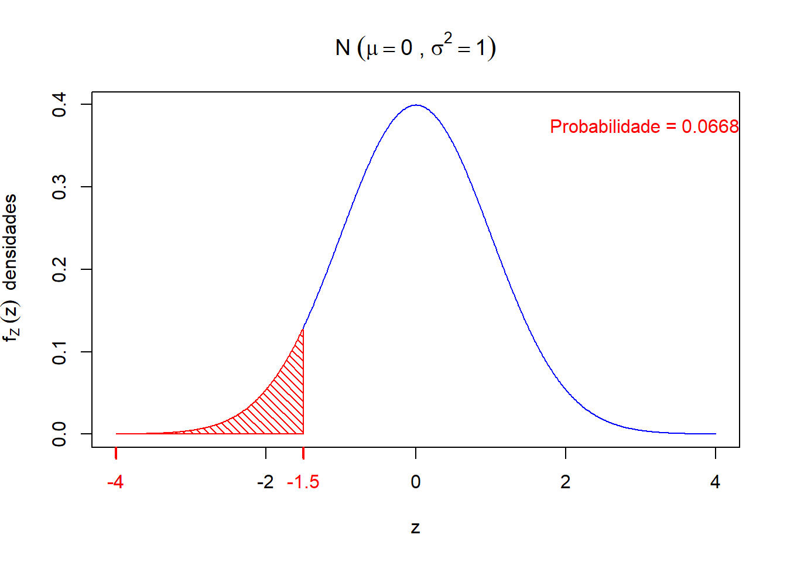
Observa-se que \(P(Z < -1,5) = P(Z > 1,5) = 0,0668\), pois as áreas (probabilidades) dos dois gráficos anteriores são iguais. Isso se deve ao fato da propriedade de simetria em torno da média (\(\mu = 0\)) da distribuição normal.
Portanto,
\[ P(\text{Indivíduo atípico}) = P(X < 3) + P(X > 9) = 0,1336. \]
Exercícios
1) Calcule as probabilidades (áreas) a partir da curva normal:
a) \(P[0 < Z < 1,2]\)
b) \(P[-0,68 < Z < 0]\)
c) \(P[2,0 < Z < 2,5]\)
d) \(P[-2,61 < Z < 2,43]\)
e) \(P[Z > - 1,63]\)
2) As alturas de mulheres têm distribuição aproximadamente normal, \(N(64,5 , (2,5)^{2})\). Qual é o percentual de mulheres que possuem altura até 67 polegadas?
3) Se \(X\) é uma variável aleatória \(N(95,56.25)\), determinar \(b\) tal que
a) \(P(X > b) = 0,9750\)
b) \(P(X < b) = 0,3707\)
4) A vida de um semicondutor a laser, a uma potência constante, segue um modelo normal com média de 7000 horas e desvio-padrão de 600 horas.
a) Qual a probabilidade do laser falhar antes de completar 5000 horas?
b) Qual deve ser o tempo observado \(t\) (em horas) de tal forma que a chance de funcionamento dos semicondutores a laser que excedem \(t\) é 95%?
5) Pacientes hospitalizados por COVID-19 são submetidos a um tratamento intensivo cujo tempo de cura da doença foi modelado por uma distribuição normal com média de internação de \(15\) dias e desvio padrão igual a \(2\) dias.
a) Calcule a proporção de pacientes que demorarrão mais de \(17\) dias para se recuperar do COVID-19.
b) Calcule a probabilidade um paciente selecionado ao acaso demorar menos de \(20\) dias para se recuperar.
c) Qual o tempo máximo necessário para a recuperação de 25% dos pacientes?
d) Se 100 pacientes forem selecionados ao acaso, qual seria o número esperado de doentes curados em menos de 11 dias?
Aproximação Binomial pela Normal
No início do século XVIII, De Moivre obteve um resultado de grande importância na teoria da probabilidade. Ele observou que a distribuição das médias amostrais retiradas de um população qualquer aproxima-se para a distribuição normal a medida que o tamanho da amostra aumenta. De Moivre observou que a aproximação para o modelo normal dependia da natureza da variável aleatória em estudo de uma certa população. Esse foi o início do resultado que ficou conhecido como teorema central do limite (TCL) e uma das melhores aproximações pela normal que o matemático francês obteve foi para uma variável aleatória que segue distribuição binomial.
Vamos supor que estamos interessados em estudar \(n = 200\) repetições independentes do experimento de Bernouli, em que a probabilidade de sucesso é representada por \(p = 0,5\). Considere agora que a variável aleatória de interesse \(X\) é o número total de sucessos nas \(n\) repetições. Como podemos calcular \(P(X = 60)\)?
Observa-se que \(X \sim \text{binomial}(n = 200, p = 0,5)\). Então,
\[ P(X = 60) = {200 \choose 60}\,(0,5)^{60}\,(0,5)^{140} \] Observa-se que somente a combinação \({200 \choose 60}\) é igual a \(7.040505 \times 10^{51}\). Evidentemente que nos dias hoje pode-se calcular essa combinação sem dificuldades com o auxílio de um computador. No R, temos que
choose(200,60)
# [1] 7.040505e+51Porém, sem a utilização de um procedimento computacional, o cálculo dessa combinação, e consequentemente da probabilidade, é extremamente complexo. Um exemplo disso foi um resultado obtido pelo matemático escocês James Stirling na sua obra Methodus Differentialis de 1719 para a aproximação do número fatorial \({\displaystyle n!}\) para a quantidade \(\displaystyle \sqrt{2\pi n} \left(\frac{n}{e}\right)^n\). Tal aproximação recebe o nome de Fórumula de Stirling, representada por
\[ n! \ \sim \ \sqrt{2\pi n} \ \left(\frac{n}{e}\right)^n. \] Observa-se que a equação acima nos diz que essas quantidades são assintoticamente equivalentes.
Neste contexto, o resultado de De Moivre que faz a aproximação da distribuição binomial pela distribuição normal, foi essencial para cálculos de probabilidade em que a variável aleatória em estudo tivesse muitos valores observados.
Seja \(X\) uma variável aleatória que segue distribuição binomial com parâmetros \(n\) e \(p\). Então, o valor esperado de \(X\) é dado por
\[ \mbox{E}(X) = n \ p \qquad \text{e} \qquad \mbox{Var}(X) = n \ p \ (1-p) \]
A aproximação da distribuição binomial pela distribuição normal é realizada calculando-se os parâmetros que descrevem uma variável aleatória, isto é \(\mbox{E}(X)\) e \(\mbox{Var}(X)\).
Por exemplo, vamos considerar uma variável aleatória binomial com $n = 10 $ e \(p = 0.5\). Observa-se que para esses valores de parâmetros, temos uma boa aproximação, isto é
library(ggplot2)
library(grid)
n = 10
p = 0.5
x = seq(0,n,1)
px = dbinom(x, n, p)
dat = data.frame(x, px)
# Aproximação
media = n*p # media
desvio = sqrt(n*p*(1-p)) # desvio padrao
ggplot(dat, aes(x = x, y = px)) +
geom_bar(stat = "identity", col = "lightblue", fill = "lightblue") +
geom_point(aes(x = x, y = px), colour = "black", size = 4) +
scale_y_continuous(expand = c(0.01, 0)) +
xlab("x") +
ylab("Probabilidade") +
stat_function(aes(x=x),fun=dnorm,geom = "line",size=1,col="red",args = c(mean = media, sd = desvio))
# Warning: `mapping` is not used by stat_function()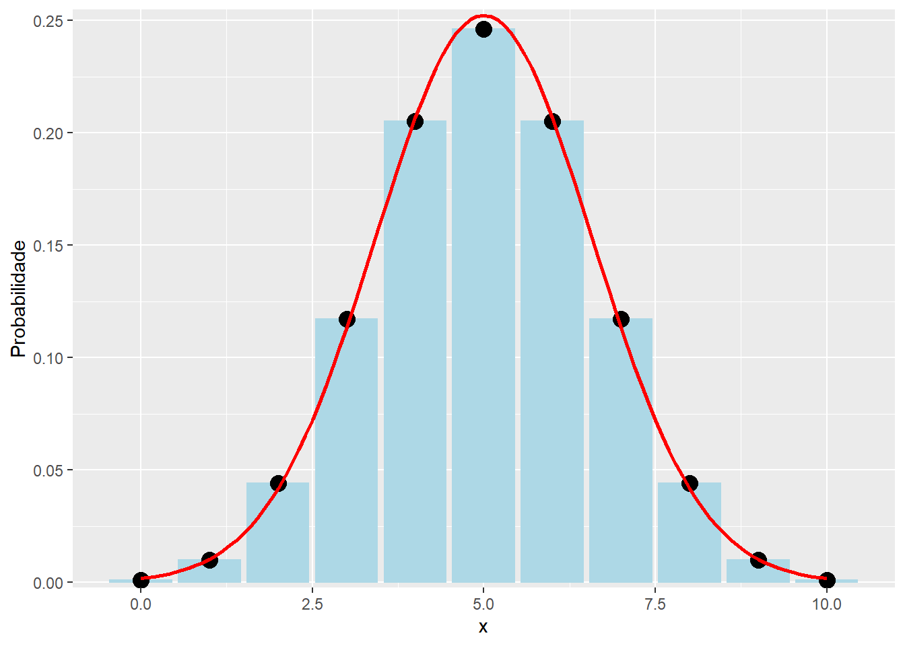
Porém, considerando os valores \(n = 10\) e \(p = 0.2\) ou \(n = 10\) e \(p = 0.8\), a aproximação para a distribuição normal não são boas, como pode-se observar nos próximos gráficos.
library(ggplot2)
library(grid)
n = 10
p = 0.1
x = seq(0,n,1)
px = dbinom(x, n, p)
dat = data.frame(x, px)
# Aproximação
media = n*p # media
desvio = sqrt(n*p*(1-p)) # desvio padrao
ggplot(dat, aes(x = x, y = px)) +
geom_bar(stat = "identity", col = "lightblue", fill = "lightblue") +
geom_point(aes(x = x, y = px), colour = "black", size = 4) +
scale_y_continuous(expand = c(0.01, 0)) +
xlab("x") +
ylab("Probabilidade") +
stat_function(aes(x=x),fun=dnorm,geom = "line",size=1,col="red",args = c(mean = media, sd = desvio))
# Warning: `mapping` is not used by stat_function()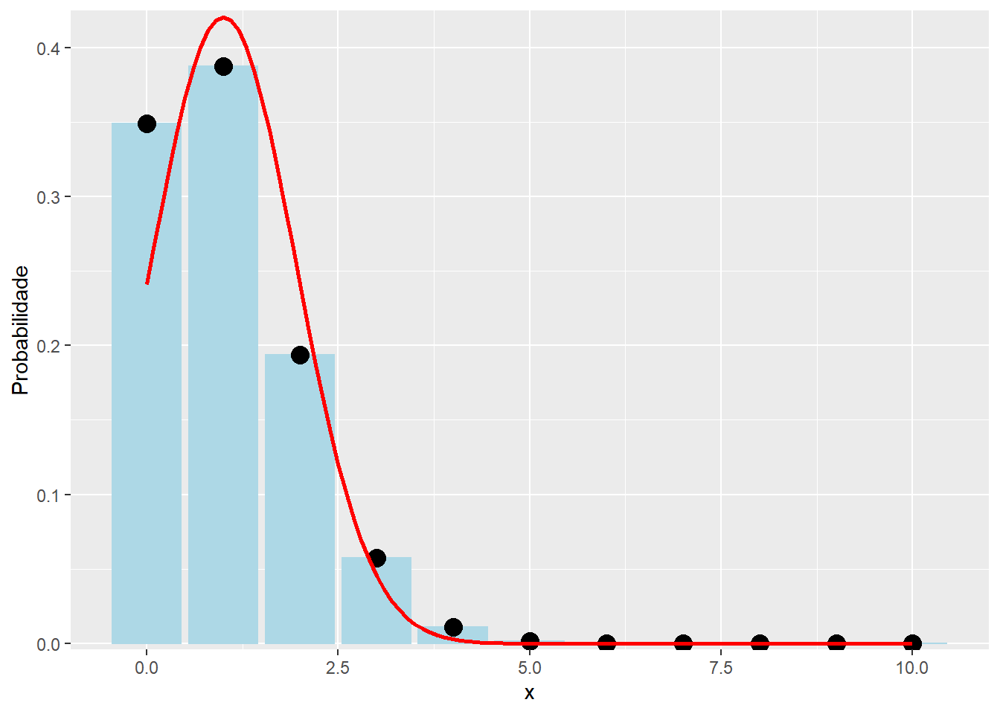
library(ggplot2)
library(grid)
n = 10
p = 0.8
x = seq(0,n,1)
px = dbinom(x, n, p)
dat = data.frame(x, px)
# Aproximação
media = n*p # media
desvio = sqrt(n*p*(1-p)) # desvio padrao
ggplot(dat, aes(x = x, y = px)) +
geom_bar(stat = "identity", col = "lightblue", fill = "lightblue") +
geom_point(aes(x = x, y = px), colour = "black", size = 4) +
scale_y_continuous(expand = c(0.01, 0)) +
xlab("x") +
ylab("Probabilidade") +
stat_function(aes(x=x),fun=dnorm,geom = "line",size=1,col="red",args = c(mean = media, sd = desvio))
# Warning: `mapping` is not used by stat_function()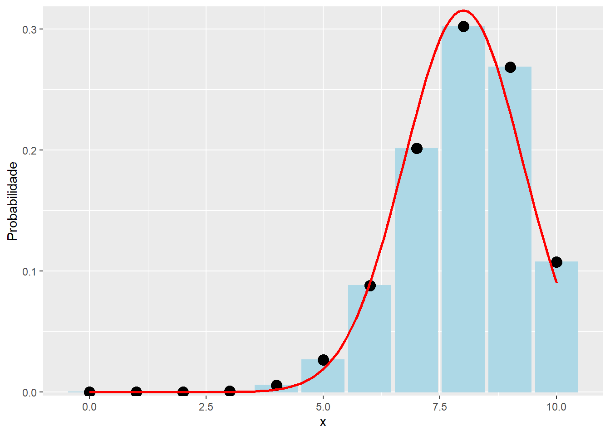
Pergunta: Para quais valores de \(n\) e \(p\) pode-se obter uma boa aproximação para a distribuição normal?
De uma maneira geral, pode-se observar que uma combinação dos valores dos parâmetros \(n\) e \(p\) da distribuição binomial é que pode levar boas aproximações para a distribuição normal. Assim, o critério para uma boa aproximação nesse caso é representado por
\[ n \ p \ \geq \ 5 \qquad \text{ou} \qquad n \ p \ (1-p) \ > 5. \]
Então, se \(X \sim \text{binomial}(n,p)\) então \(E(X) = np\) e \(Var(X) = np(1-p)\). Pode-se aproximar a distribuição binomial pela distribuição normal, utilizando-se \[ Y \sim \text{N}(\mu = np, \ \sigma^2 = np(1-p)), \] quando \(np \geq 5\) e \(np(1-p) \geq 5\).
Exercício
Estudo do Sindicato dos Bancários indica que cerca de \(30\%\) dos funcionários de banco têm problemas de estresse, provenientes das condições de trabalho. Numa amostra de \(200\) bancários, qual é a probabilidade de que pelo menos \(50\) estão com essa doença?
Porém, como \(E(X) = np = 60\) e \(Var(X) = np(1-p) = 42\), então podemos aproximar a binomial pela normal, isto é, podemos considerar \(Y \sim \text{N}(60, 42)\), de modo que
\[ \begin{align*} P(X \geq 50) \approx P(Y \geq 50-0.5) &= P\left(\frac{Y-\mu}{\sigma} \geq \frac{49.5-60}{\sqrt{42}}\right) = P(Z \geq -1.62) = 0.9474 \end{align*} \]
- Observação: o valor \(-0.5\) é o fator de correção de continuidade utilizado para calcular probabilidades de distribuições discretas por meio de distribuições contínuas.
Usando o R:
## Cálculo exato pela distribuição binomial
pbinom(49, size = 200, prob = 0.3, lower.tail = FALSE)
# [1] 0.9494082
## Aproximação pela Normal
pnorm(50-0.5, mean = 60, sd = sqrt(42), lower.tail = FALSE)
# [1] 0.9474037Aproximação de \(X \sim \text{binomial}(200, 0.3)\) utilizando uma \(Y \sim \text{N}(60, 42)\).
x <- 0:200
px <- dbinom(x, size = 200, prob = 0.3)
plot(x, px, type = "h", xlab = "x", ylab = "Função Densidade")
fx <- dnorm(x, mean = 60, sd = sqrt(42))
lines(x, fx, col = 2)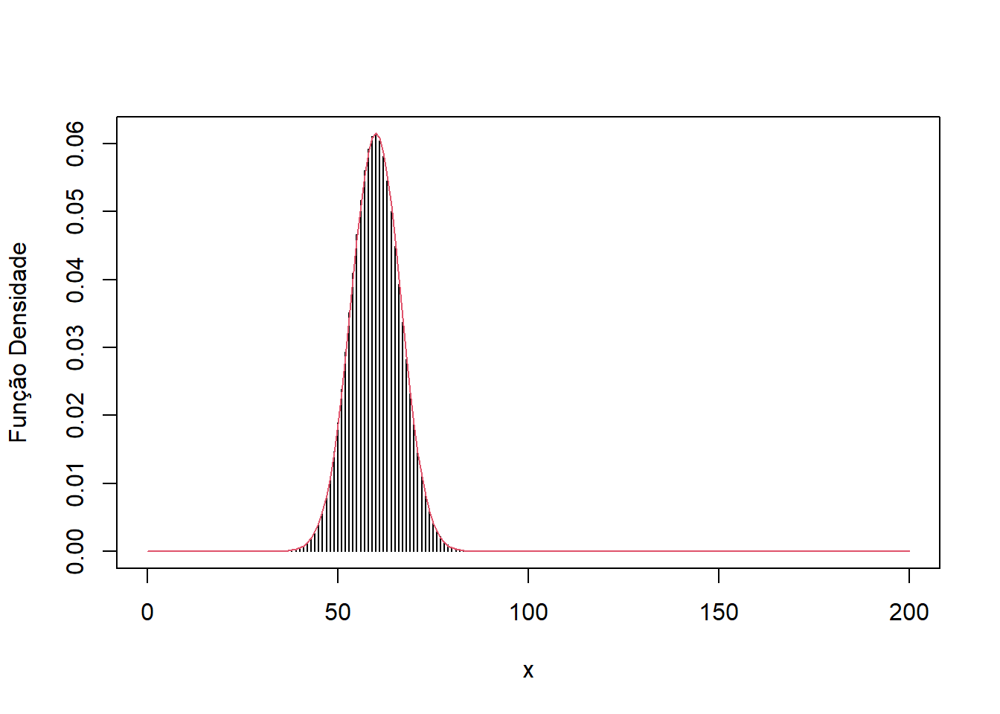

Este conteúdo está disponível por meio da Licença Creative Commons 4.0